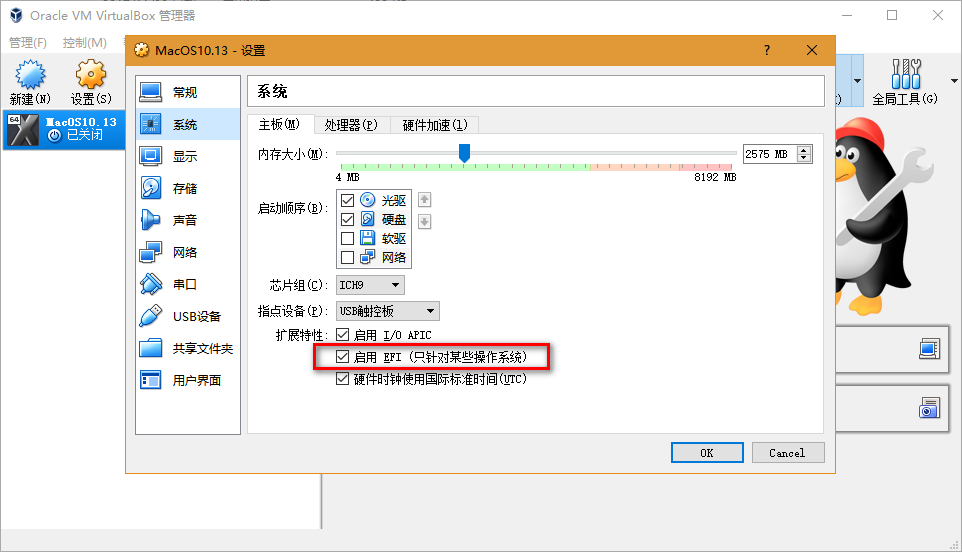
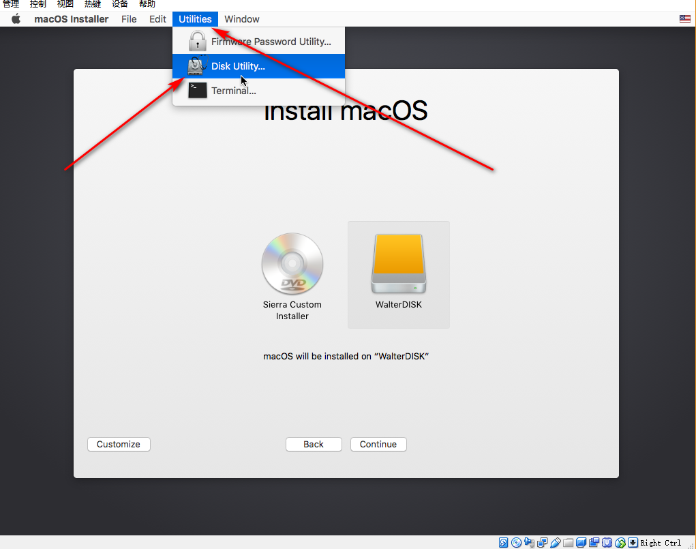
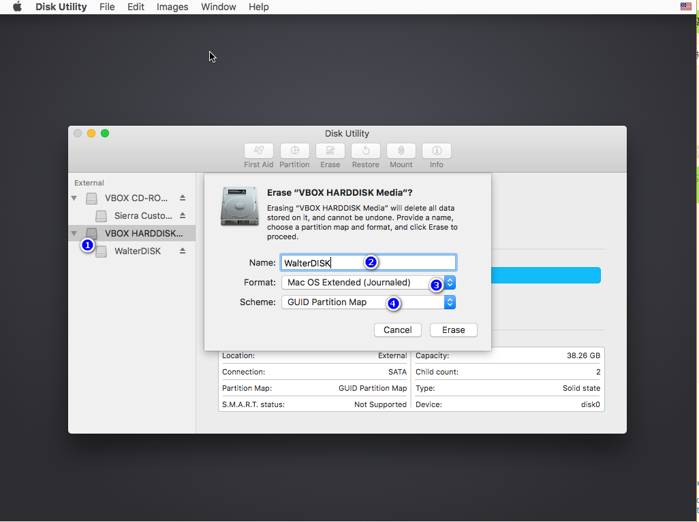

准备工作¶
- 测试时间: 2018.09.05
- VirtualBox版本: 5.2.18
- MacOS镜像版本：MacOS High Sierra 10.13
- 下载地址: https://blog.csdn.net/icarus666/article/details/79536388中下载的镜像
- 网盘下载: macOS High Sierra 10.13.iso
- MacOS vmdk镜像版本: MacOS Mojave 10.14 Beta 6
- 百度网盘下载地址: 百度网盘 Mac OS 10.14 Beta6
- Google Driver下载地址: Google Driver for Mac 10.14 Beta6
- 测试结果: VirtualBox中成功安装MacOS 10.13/10.14 Beta 6
参考地址¶
Mac dmg to iso format¶
DMG is Mac OS X native disk image format while virtual machines (VmWare, Parallels or VirtualBox) are able to mount ISO images only. With AnyToISO program you can convert DMG to ISO and mount the resulting ISO image to your virtual machine (running Mac OS X).
镜像安装前用到的修改命令¶
----- For Mac OS 10.14 Beta 6
cd "C:\Program Files\Oracle\VirtualBox\"
VBoxManage.exe modifyvm "MacOS10.14Beta6" --cpuidset 00000001 000106e5 00100800 0098e3fd bfebfbff
VBoxManage setextradata "MacOS10.14Beta6" "VBoxInternal/Devices/efi/0/Config/DmiSystemProduct" "iMac11,3"
VBoxManage setextradata "MacOS10.14Beta6" "VBoxInternal/Devices/efi/0/Config/DmiSystemVersion" "1.0"
VBoxManage setextradata "MacOS10.14Beta6" "VBoxInternal/Devices/efi/0/Config/DmiBoardProduct" "Iloveapple"
VBoxManage setextradata "MacOS10.14Beta6" "VBoxInternal/Devices/smc/0/Config/DeviceKey" "ourhardworkbythesewordsguardedpleasedontsteal(c)AppleComputerInc"
VBoxManage setextradata "MacOS10.14Beta6" "VBoxInternal/Devices/smc/0/Config/GetKeyFromRealSMC" 1
---- For Mac OS 10.13.6
cd "C:\Program Files\Oracle\VirtualBox\"
VBoxManage.exe modifyvm "MacOS10.13.6" --cpuidset 00000001 000106e5 00100800 0098e3fd bfebfbff
VBoxManage setextradata "MacOS10.13.6" "VBoxInternal/Devices/efi/0/Config/DmiSystemProduct" "iMac11,3"
VBoxManage setextradata "MacOS10.13.6" "VBoxInternal/Devices/efi/0/Config/DmiSystemVersion" "1.0"
VBoxManage setextradata "MacOS10.13.6" "VBoxInternal/Devices/efi/0/Config/DmiBoardProduct" "Iloveapple"
VBoxManage setextradata "MacOS10.13.6" "VBoxInternal/Devices/smc/0/Config/DeviceKey" "ourhardworkbythesewordsguardedpleasedontsteal(c)AppleComputerInc"
VBoxManage setextradata "MacOS10.13.6" "VBoxInternal/Devices/smc/0/Config/GetKeyFromRealSMC" 1
Mac OS 安装遇到的问题¶
- 错误提示 `Querying “UUID” failed (VERR_CFGM_VALUE_NOT_FOUND)
Solution: because of EFI settings. If you already tried all combinations of EFI and Chipset (4 cases) and it still doesn’t help then just give up. The VM won’t work on your machine. 只需要在如下设置里面勾选”启用EFI“即可.如下截图: 
- When install ” there is no enough free space on sierra custom installer to install “
Solution: From the top menu, choose “Utilities”=> “Disk Utility”,and open the dialog, see below screnenshot:  then from the right check the virtualbox’s disk and select “Erasing”,and input the new disk name and format.etc. see below screenshot:  Go back the install screenshot, or restart the virtualmachine, then you could see “YOUR DISK NAME” as an option on “Install OS X” screen as shown above. - Stuck at first screen: Open virtualbox, change Guest Version to Other 64bit, select tab “Storage” and enable “Use Host I/O Cache”. - Mouse and Keyboard not working: Install “Oracle VM VirtualBox Extension Pack” download from virtualbox website. Open VirtualBox, select tab “USB”, click enable USB 3.0 Controller and add your Mouse to VirtualBox.

Mac OS 安装nodejs¶
- control + space 打开spotlight,输入“终端”，就打开了终端，类似win下的cmd;
- 输入 node -v , 回车;
- 输入 npm -v , 回车;
- 若无错，则显示版本号;
Mac OS 安装cordova¶
sudo npm install -g cordova
1. cordova create VRPanoApp com.yitieyilu.app VRPanoApp
# 参数名称对应的是: 文件夹名称 包名称 和app名称
2. cordova platforms add android
cordova platforms add ios
cordova plugin add cordova-plugin-splashscreen --save
cordova plugin add cordova-plugin-console --save
如果没有sudo则会报错，原因：由于 root 用户在 OS X 中具有特殊权限，因此对于特定的管理或故障诊断任务可能非常有用，但不适合日常使用。如果使用不慎，root 用户作出的更改可能只有通过重装 OS X 才能修复。考虑使用其他方式（如 sudo 命令）来代替启用 root 用户。
Mac OS 安装cordova依赖¶
sudo npm install -g ios-deploy - -unsafe-perm=t //代表真机运行环境
sudo npm install -g ios-sim //代表模拟器运行环境
virtualbox设置MAC OS X虚拟机共享剪切板¶
- 设置->高级->共享剪切板 双向，拖拽 双向
- 虚拟机设置-存储-控制器SATA-勾选”使用主机输入输出(I/O)缓存”
- 存储-控制器SATA-点击*.vdi-勾选”固态驱动器”
- 启动虚拟机->左上角divices->insert additional …
- 重启虚拟机
Mac OS虚拟机大小写切换，中英文切换¶
-
中文小写英文切换：
–按一下caps lock键就可以实现中文小写英文切换 * 大小写切换：
–不管是在中文状态下还是小写英文状态下，只要按住shift键就可以实现大写输入 * 大小写切换其他方式：
–长按住caps lock键2s，caps lock灯亮即可切换到大写输入状态，这种情况适合于连续输入好多大写字母。输完了轻点一下caps lock就可以切换到非大写状态
How to update MacOS X¶
发现使用过iphone的就知道了,直接进入App Store 里面,然后搜索MacOS,里面会看到对应的版本,或者它这里会提示你是否有新的版本可以下载,确实很方便.
参考地址: https://jingyan.baidu.com/article/647f0115e342b97f2148a8ad.html
Install XCode 10 beta 6¶
Need to upgrade Mac to the latest version, because XCode 10 Beta 6 need the Mac Version is Mac 10.13.6 or later.
How to change the display resolution¶
Virtualbox’s virtual machine screen is too small, the below command to change the display resolution:
cd "C:\Program Files\Oracle\VirtualBox\"
--- For Mac OS 10.14 beta 6
VBoxManage setextradata “MacOS10.14Beta6” VBoxInternal2/EfiGraphicsResolution 1920x1080
--- For Mac OS 10.13
VBoxManage.exe setextradata global GUI/MaxGuestResolution any
VBoxManage.exe setextradata "MacOS10.13" "CustomVideoMode1" "1920x1080x32"
vboxmanage.exe controlvm "MacOS10.13" setvideomodehint 1920 1080 32
如何下载Google Driver中的文件¶
- 不要使用迅雷, 使用这个工具 Internet Download Manager 6.31 build 3, 需要用到的 破解补丁.
- 然后打开你的代理软件,回到Internet Download Manager中,选择”选项”=>”代理服务器”,再在里面设置刚才对应的代理软件的主机和端口号.
- 使用感觉:
这个工具使用起来发现比迅雷的下载速度还要快
Virtualbox桥接上网¶
- 原理： 1. 通过主机网卡，架设一条桥，直接连入到网络中。它使得虚拟机能被分配到一个网络中独立的IP，所有网络功能完全和在网络中的真实机器一样。 (虚拟机是通过主机所在网络中的DHCP服务得到ip地址的，所以按理来说，两者是完全独立的，但事实却是虚拟机是没有独立硬件的，它还是要依靠主机的网卡，因此，主机要断开网络，虚拟机也就没法拿到ip了，所以呵呵~~所有特点全消失咯）
Recommended for you